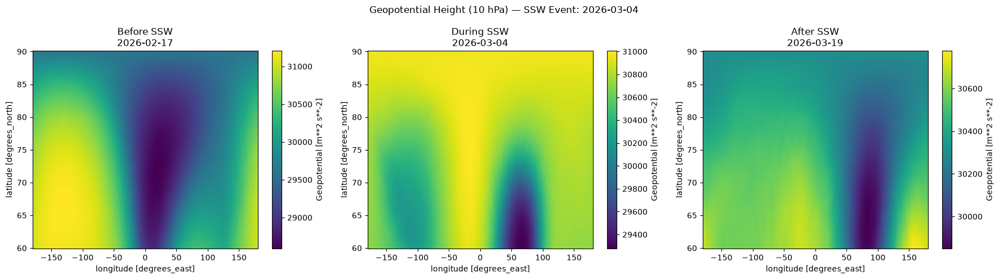

LSTM ROC-AUC
0.909
Optimal class discrimination threshold
SSW Event Recall
66.7%
14 of 21 test disturbance days detected
Temporal Observations
727
Dec 2020 – Mar 2026 daily samples
Sequence Memory
14 Days
Rolling atmospheric history window
Atmospheric Variables Formulation
$$Z_{\text{polar}}(t) = \frac{1}{N} \sum_{i=1}^{N} Z_{10\,\text{hPa}}(i, t)$$
Gravitational potential of polar vortex mass structure.
$$\overline{U}_{60}(t) = \frac{1}{N_\lambda} \sum_{\lambda} U(60^\circ\text{N}, \lambda, t)$$
East-west wind speed at 60°N. Reversal: U < 0 m/s.
$$\overline{V}_{60}(t) = \frac{1}{N_\lambda} \sum_{\lambda} V(60^\circ\text{N}, \lambda, t)$$
North-south wave turbulence and planetary momentum flux.
$$T_{\text{polar}}(t) = \frac{1}{N} \sum_{i=1}^{N} T_{10\,\text{hPa}}(i, t) - 273.15$$
Spatial mean thermal state across 60°N–90°N Arctic cap.
Polar Cap Dynamics & Detected Reversals
| Event Date | Classification | Verification Status | Notes |
|---|---|---|---|
| 2021-01-05 | Major SSW | Confirmed | Vortex split; severe European freeze. |
| 2021-02-01 | Major SSW | Confirmed | Prolonged displacement; North American cold outbreak. |
| 2022-03-20 | Final Warming | Filtered | Springtime transition without 10-day westerly recovery. |
| 2023-02-16 | Major SSW | Confirmed | Wave-2 warming event; circumpolar flow breakdown. |
| 2024-01-16 | Major SSW | Confirmed | Teleconnection to prolonged North & NW India cold spell. |
| 2024-03-04 | Major SSW | Confirmed | Late-winter polar jet displacement. |
| 2025-03-09 | Final Warming | Filtered | Springtime transition without 10-day recovery. |
| 2026-03-04 | Major SSW | Case Study | Deepest central Arctic U-wind reversal (-60 m/s). |
Synoptic Spatial Field Inspection

Geopotential Height (m) — Tracks polar vortex mass restructuring and displacement. 15 days before, onset day (2026-03-04), and 15 days after. Source: ECMWF ERA5 (10 hPa).
Model Inference Sandbox
Predicted Probability
HIGH RISK: POLAR BREAKDOWN LIKELY
78%
Random Forest
45%
Forecast Lead
7 – 14 Days
Feature Importance Ranking
Top Predictors: Geopotential_lag3 (0.140) and Temperature_roll7_std (0.122) lead the ranking. Pressure geometry and short-term temperature volatility dominate over raw single-day observations.
Model Performance & Held-Out Test Evaluation
| Model Architecture | Accuracy | Precision | Recall | F1-Score | ROC-AUC | Status | Evaluation Findings |
|---|---|---|---|---|---|---|---|
| Random Forest | 0.824 | 0.385 | 0.238 | 0.294 | 0.689 | Ensemble Baseline | High accuracy on calm days; misses 76% of rare SSW events. |
| Linear Regression | 0.485 | 0.173 | 0.378 | 0.271 | 0.594 | Linear Baseline | Fails binary threshold; yields 62 false alarms on held-out test data. |
| LSTM Sequence | 0.779 | 0.378 | 0.667 | 0.483 | 0.909 | Optimal Model | 2.8x higher recall than RF; superior discrimination (AUC 0.909). |
Random Forest
| 107 TN |
8 FP |
| 16 FN |
5 TP |
Linear Regression
| 53 TN |
62 FP |
| 8 FN |
13 TP |
LSTM Sequence
| 92 TN |
23 FP |
| 7 FN |
14 TP |